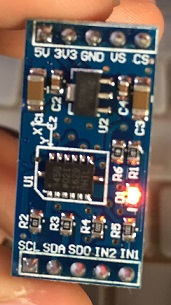
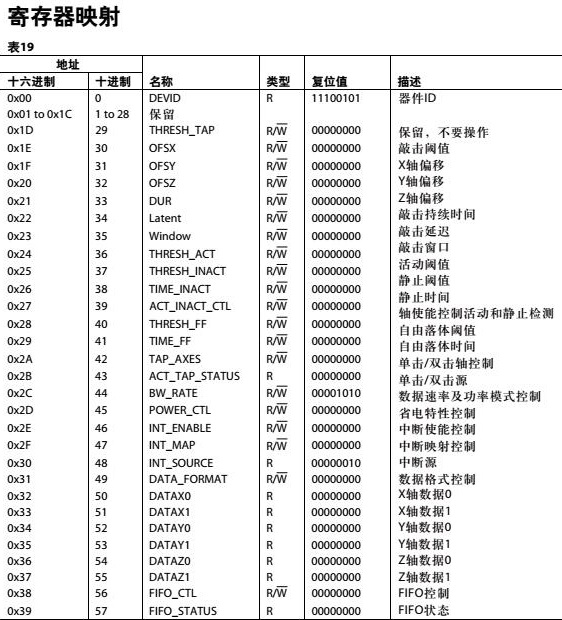
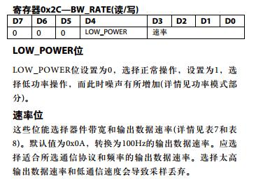
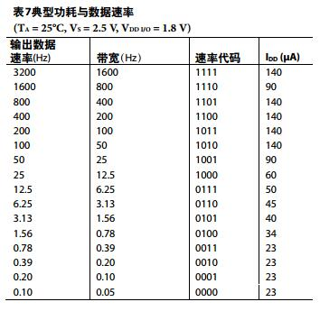
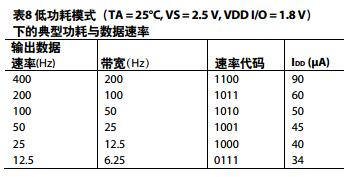
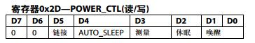
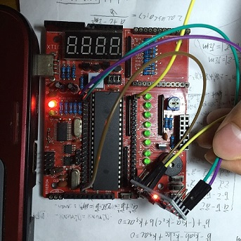
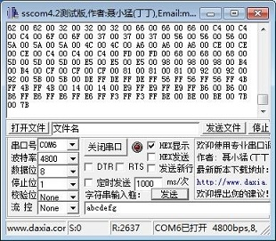

上次写了一篇《Arduino使用ADXL345加速度传感器模块》，不过里面是直接用了现成的库。对于做原型，使用现成的库来快速实现想法当然可行，不过并不能真正理解里面的原理。其实个人认为，学习嵌入式外设最好的方式莫过于自己在51单片机上实现一遍。所以，这次我用51单片机来操作ADXL345加速度传感器模块。
=================阶段一：ADXL345原理概述===============
ADXL345加速度模块与单片机之间的通信使用的是I2C协议。作为前置学习，我已经写了一篇《51单片机使用I2C总线》，为51单片机封装了I2C的函数库。I2C协议概括地说，无非就是读写两个操作，可以表示为void write(address,register,data)和uint8 read(address,register)。也就是说，读的时候，指定设备地址、寄存器地址，读出一个字节；写的时候，指定设备地址、寄存器地址，写入一个字节。
网上买来的ADXL345模块的长这样：

在一般的应用中，只有四根线用得着，分别是VCC,GND,SDA和SCL。其中VCC是泛指最上面的5V和3V3，两种电压皆可。当这么接时，ADXL345使用I2C通信，设备地址是0x53。
ADXL345所有的寄存器地址与功能列表可以查看硬件手册《ADXL345中文资料》。这里贴一张总览：

====================阶段二：通用代码=================
接下来给出一段51单片机操作ADXL345的通用代码，其中需要用到的types.h、i2c.h、i2c.c请参考《51单片机使用I2C总线》，还需要用到buffered_uart.h和buffered_uart.c请参考《为51单片机打造带接收缓冲区的串口（Buffered Uart）》。
main.c
#include "reg51.h"
#include "types.h"
#include "i2c.h"
#include "buffered_uart.h"
#define ADXL345_ADDR 0x53
void main()
{
uint8 t_low,t_high;
uint8 t_buffer[4];
//初始化串口缓冲区
uart_init(4800,t_buffer,4);
//不断读取DEVICE_ID，直到读到0xE5，说明正常
while(i2c_read(ADXL345_ADDR,0x00)!=0xE5);
//设置测量范围为±16g，精度13位
i2c_write(ADXL345_ADDR,0x31,0x0B);
//采集速率设定为50Hz
i2c_write(ADXL345_ADDR,0x2C,0x09);
//电源模式
i2c_write(ADXL345_ADDR,0x2D,0x08);
while(1)
{
//读取X轴数据的低8位
t_low=i2c_read(ADXL345_ADDR,0x32);
//读取X轴数据的高8位
t_high=i2c_read(ADXL345_ADDR,0x33);
uart_write(t_low);
uart_write(t_high);
}
}
在该例子中，首先初始化串口，设置波特率为4800，缓冲区大小为4字节：
uart_init(4800,t_buffer,4);
然后，不断读取ADXL345上地址为0x00的寄存器（DEVID），直到读到0xE5为止：
while(i2c_read(ADXL345_ADDR,0x00)!=0xE5);
这是因为根据上面的寄存器映射表可知，上电后ADXL345的DEVID=11100101=0xE5。
通过如下代码向寄存器0x31（DATA_FORMAT）写入0x0B
i2c_write(ADXL345_ADDR,0x31,0x0B);
设置数据模式为±16g，精度为13位（因为每一个1代表4mg，所以16g就是16*2/4m=8000=13位）。DATA_FORMAT具体用法可以查手册得到：

接着，代码
i2c_write(ADXL345_ADDR,0x2C,0x09);
把采样速率设置为50Hz。寄存器0x2C（BW_RATE）设置见下图：

低功耗模式下，功耗会降低，采样数值的噪音会稍微大一些。正常模式和低功耗模式下采样速率、设置值、功耗见下两表：


最后，通过
i2c_write(ADXL345_ADDR,0x2D,0x08);
向寄存器0x2D（POWER_CTL）写入0x80，也就是把“测量”位置为1。POWER_CTL格式如图：

测量位置为1后，才能读到数据。
最后，在while循环中不断读取0x32（DATAX0）和0x33（DATAX1）寄存器中的数据，并通过串口输出：
t_low=i2c_read(ADXL345_ADDR,0x32); t_high=i2c_read(ADXL345_ADDR,0x33);
====================阶段三：真机实验==================
把以上代码烧入51单片机中，ADXL345的5V接51单片机的VCC，ADXL345的GND接51单片机的GND，ADXL345的SCL接51单片机的P1^0，ADXL345的SDA接51单片机的P1^1（可以修改i2c.c中的宏定义）。

上电之后，串口不停输出X轴加速度低8位和高8位：
